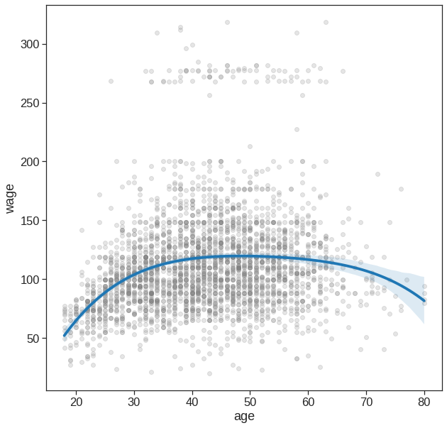
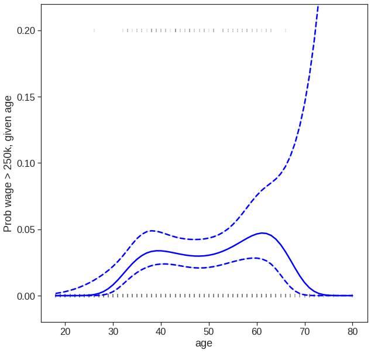
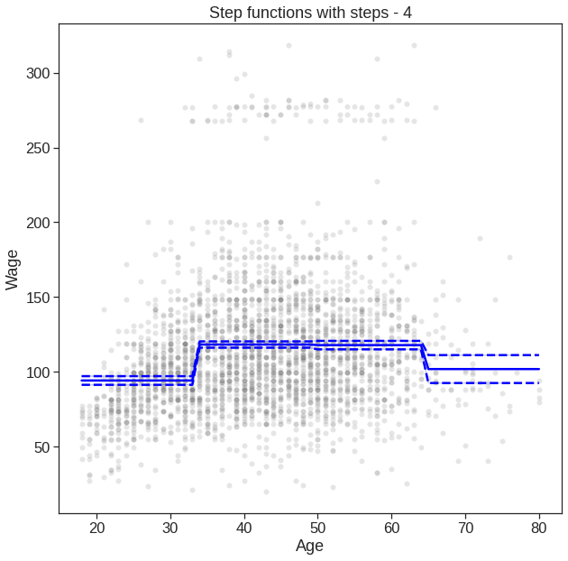
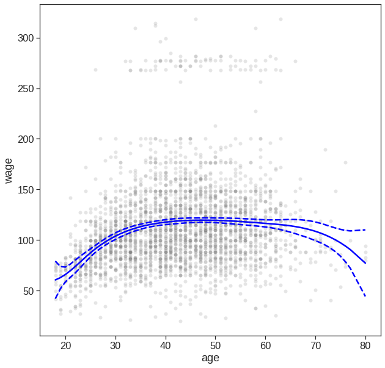
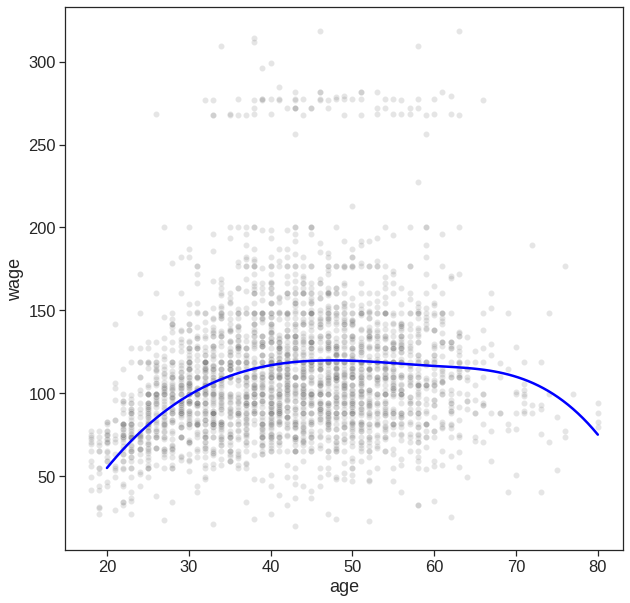
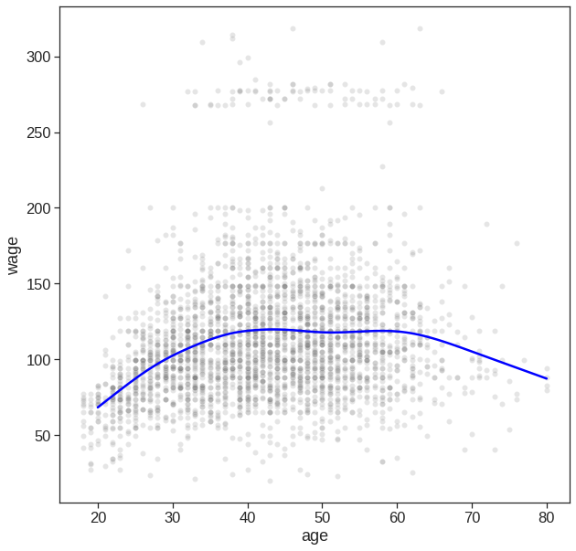
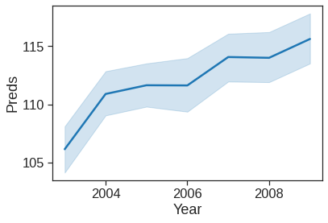
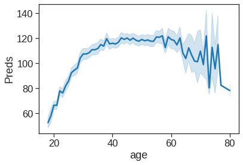
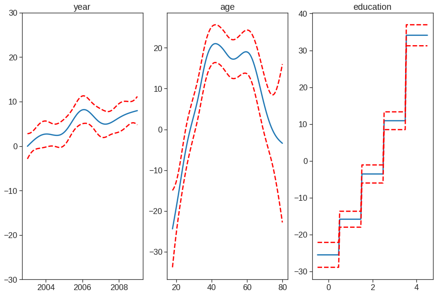
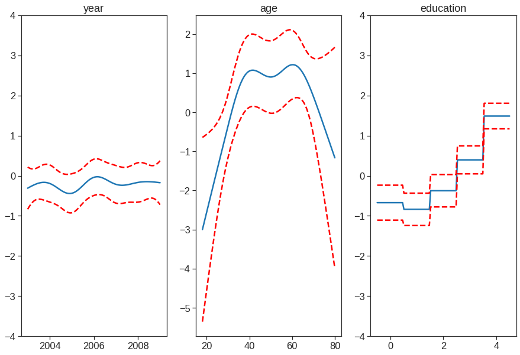

Looking in indexes: https://pypi.org/simple, https://us-python.pkg.dev/colab-wheels/public/simple/
Collecting pygam
Downloading pygam-0.8.0-py2.py3-none-any.whl (1.8 MB)
|████████████████████████████████| 1.8 MB 4.3 MB/s
Requirement already satisfied: progressbar2 in /usr/local/lib/python3.7/dist-packages (from pygam) (3.38.0)
Requirement already satisfied: future in /usr/local/lib/python3.7/dist-packages (from pygam) (0.16.0)
Requirement already satisfied: scipy in /usr/local/lib/python3.7/dist-packages (from pygam) (1.7.3)
Requirement already satisfied: numpy in /usr/local/lib/python3.7/dist-packages (from pygam) (1.21.6)
Requirement already satisfied: python-utils>=2.3.0 in /usr/local/lib/python3.7/dist-packages (from progressbar2->pygam) (3.3.3)
Requirement already satisfied: six in /usr/local/lib/python3.7/dist-packages (from progressbar2->pygam) (1.15.0)
Installing collected packages: pygam
Successfully installed pygam-0.8.07 Non-linear Modeling
|
|

|
7.1 Setup
In this lab, we re-analyze the Wage data considered in the examples throughout this chapter, in order to illustrate the fact that many of the complex non-linear fitting procedures discussed can be easily implemented in Python.
import pandas as pd
import numpy as np
from tqdm import tqdm
import statsmodels.api as sm
import statsmodels.formula.api as smf
from statsmodels.gam.api import GLMGam, BSplines
from statsmodels.gam.generalized_additive_model import LogitGam
from patsy import dmatrix
import patsy as pt
from sklearn.preprocessing import PolynomialFeatures, SplineTransformer
from sklearn.linear_model import LinearRegression
from sklearn.base import BaseEstimator, TransformerMixin
from typing import List
from numpy.linalg import inv
from scipy import optimize
import matplotlib.pyplot as plt
import seaborn as sns
%matplotlib inline
plt.style.use('seaborn-white')
sns.set_context("notebook", font_scale=1.5, rc={"lines.linewidth": 2.5})class SmoothingSpline1D(BaseEstimator, TransformerMixin):
# https://github.com/empathy87/The-Elements-of-Statistical-Learning-Python-Notebooks/blob/master/examples/Bone%20Mineral%20Density.ipynb
"""One dimensional smoothing spline.
Parameters
----------
dof :
The target effective degrees of of freedom of a smoothing spline.
Attributes
----------
knots_:
Unique values of X training data.
smooth_:
The smoothing parameter that results in the target degrees of freedom.
coef_:
The vector of fitted coefficients for linear regression."""
def __init__(self, dof: float):
self.dof = dof
def fit(self, X: np.ndarray, y: np.array) -> 'SmoothingSpline1D':
"""Fit SmoothingSpline1D model according to the given training data
and parameters.
Parameters
----------
X :
Training data.
y :
Target values.
"""
y = np.atleast_2d(y).T
self.knots_ = np.unique(X)
N = self.__expand_natural_cubic(X, self.knots_)
O = self.__calc_integral_matrix(self.knots_)
self.smooth_ = optimize.newton(
lambda s: self.__calc_dof(N, O, s) - self.dof,
0.5, maxiter=400)
self.coef_ = inv(N.T @ N + self.smooth_ * O) @ N.T @ y
self.Sl_ = self.__calc_Sl(N, O, self.smooth_)
return self
def transform(self, X: np.ndarray) -> np.ndarray:
"""Natural cubic spline basis expansion.
Parameters
----------
X :
Input data.
Returns
-------
X_new :
Transformed data.
"""
return self.__expand_natural_cubic(X, self.knots_)
def predict(self, X: np.ndarray) -> np.array:
return self.transform(X) @ self.coef_
@staticmethod
def __calc_Sl(N, O, smoothing):
return N @ inv(N.T @ N + smoothing * O) @ N.T
@staticmethod
def __calc_dof(N, O, smoothing):
if smoothing < 0:
smoothing = 0
return np.trace(SmoothingSpline1D.__calc_Sl(N, O, smoothing))
@staticmethod
def __dk(X: np.ndarray, knot: float, knot_last: float) -> np.ndarray:
return (X - knot).clip(0) ** 3 / (knot_last - knot)
@staticmethod
def __expand_natural_cubic(X: np.ndarray, knots: np.array) -> np.ndarray:
basis_splines = [np.ones(shape=(X.size, 1)), X]
dk_last = SmoothingSpline1D.__dk(X, knots[-2], knots[-1])
for knot in knots[:-2]:
dk = SmoothingSpline1D.__dk(X, knot, knots[-1])
basis_splines.append(dk - dk_last)
return np.hstack(basis_splines)
@staticmethod
def __calc_integral_matrix(knots: np.array) -> np.ndarray:
O = np.zeros(shape=(knots.size, knots.size))
for i in range(2, knots.size):
for j in range(i, knots.size):
O[i, j] = O[j, i] = SmoothingSpline1D.__calc_integral(
knots[i-2], knots[j-2], knots[-2], knots[-1])
return O
@staticmethod
def __calc_integral(i, j, p, l):
return (-18*i*j*j + 12*i*j*l + 24*i*j*p - 12*i*l*p - 6*i*p*p +
6*j*j*j - 12*j*l*p - 6*j*p*p + 12*l*p*p) / \
(i*j - i*l - j*l + l*l)7.2 Polynomial Regression
We now examine how Figure 7.1 was produced. We first fit the model using the following command:
Mounted at /content/drive(3000, 11)| year | age | maritl | race | education | region | jobclass | health | health_ins | logwage | wage | |
|---|---|---|---|---|---|---|---|---|---|---|---|
| 0 | 2006 | 18 | 1. Never Married | 1. White | 1. < HS Grad | 2. Middle Atlantic | 1. Industrial | 1. <=Good | 2. No | 4.318063 | 75.043154 |
| 1 | 2004 | 24 | 1. Never Married | 1. White | 4. College Grad | 2. Middle Atlantic | 2. Information | 2. >=Very Good | 2. No | 4.255273 | 70.476020 |
| 2 | 2003 | 45 | 2. Married | 1. White | 3. Some College | 2. Middle Atlantic | 1. Industrial | 1. <=Good | 1. Yes | 4.875061 | 130.982177 |
| 3 | 2003 | 43 | 2. Married | 3. Asian | 4. College Grad | 2. Middle Atlantic | 2. Information | 2. >=Very Good | 1. Yes | 5.041393 | 154.685293 |
| 4 | 2005 | 50 | 4. Divorced | 1. White | 2. HS Grad | 2. Middle Atlantic | 2. Information | 1. <=Good | 1. Yes | 4.318063 | 75.043154 |
#Wage = Wage.drop(Wage.columns[0], axis=1) # the first col dones't seem to be that relevant
Wage['education'] = Wage['education'].map({'1. < HS Grad': 1.0,
'2. HS Grad': 2.0,
'3. Some College': 3.0,
'4. College Grad': 4.0,
'5. Advanced Degree': 5.0
})
Wage.head()| year | age | maritl | race | education | region | jobclass | health | health_ins | logwage | wage | |
|---|---|---|---|---|---|---|---|---|---|---|---|
| 0 | 2006 | 18 | 1. Never Married | 1. White | 1.0 | 2. Middle Atlantic | 1. Industrial | 1. <=Good | 2. No | 4.318063 | 75.043154 |
| 1 | 2004 | 24 | 1. Never Married | 1. White | 4.0 | 2. Middle Atlantic | 2. Information | 2. >=Very Good | 2. No | 4.255273 | 70.476020 |
| 2 | 2003 | 45 | 2. Married | 1. White | 3.0 | 2. Middle Atlantic | 1. Industrial | 1. <=Good | 1. Yes | 4.875061 | 130.982177 |
| 3 | 2003 | 43 | 2. Married | 3. Asian | 4.0 | 2. Middle Atlantic | 2. Information | 2. >=Very Good | 1. Yes | 5.041393 | 154.685293 |
| 4 | 2005 | 50 | 4. Divorced | 1. White | 2.0 | 2. Middle Atlantic | 2. Information | 1. <=Good | 1. Yes | 4.318063 | 75.043154 |
poly = PolynomialFeatures(4)
X = poly.fit_transform(Wage['age'].to_frame())
y = Wage['wage']
# X.shape
model = sm.OLS(y,X).fit()
print(model.summary()) OLS Regression Results
==============================================================================
Dep. Variable: wage R-squared: 0.086
Model: OLS Adj. R-squared: 0.085
Method: Least Squares F-statistic: 70.69
Date: Sun, 06 Nov 2022 Prob (F-statistic): 2.77e-57
Time: 07:35:04 Log-Likelihood: -15315.
No. Observations: 3000 AIC: 3.064e+04
Df Residuals: 2995 BIC: 3.067e+04
Df Model: 4
Covariance Type: nonrobust
==============================================================================
coef std err t P>|t| [0.025 0.975]
------------------------------------------------------------------------------
const -184.1542 60.040 -3.067 0.002 -301.879 -66.430
x1 21.2455 5.887 3.609 0.000 9.703 32.788
x2 -0.5639 0.206 -2.736 0.006 -0.968 -0.160
x3 0.0068 0.003 2.221 0.026 0.001 0.013
x4 -3.204e-05 1.64e-05 -1.952 0.051 -6.42e-05 1.45e-07
==============================================================================
Omnibus: 1097.594 Durbin-Watson: 1.960
Prob(Omnibus): 0.000 Jarque-Bera (JB): 4965.521
Skew: 1.722 Prob(JB): 0.00
Kurtosis: 8.279 Cond. No. 5.67e+08
==============================================================================
Notes:
[1] Standard Errors assume that the covariance matrix of the errors is correctly specified.
[2] The condition number is large, 5.67e+08. This might indicate that there are
strong multicollinearity or other numerical problems.# STATS
# ----------------------------------
# Reference: https://stats.stackexchange.com/questions/44838/how-are-the-standard-errors-of-coefficients-calculated-in-a-regression
y_hat = model.predict(X)
# Covariance of coefficient estimates
mse = np.sum(np.square(y_hat - y)) / y.size
cov = mse * np.linalg.inv(X.T @ X)
# ...or alternatively this stat is provided by stats models:
#cov = model.cov_params()
# Calculate variance of f(x)
var_f = np.diagonal((X @ cov) @ X.T)
# Derive standard error of f(x) from variance
se = np.sqrt(var_f)
conf_int = 2*se
# PLOT
# ----------------------------------
# Setup axes
fig, ax = plt.subplots(figsize=(10,10))
# Plot datapoints
sns.scatterplot(x='age', y='wage',
color='tab:gray',
alpha=0.2,
ax=ax,
data=Wage)
# Plot estimated f(x)
sns.lineplot(x=X[:, 1], y=y_hat, ax=ax, color='blue');
# Plot confidence intervals
sns.lineplot(x=X[:, 1], y=y_hat+conf_int, color='blue');
sns.lineplot(x=X[:, 1], y=y_hat-conf_int, color='blue');
# dash confidnece int
ax.lines[1].set_linestyle("--")
ax.lines[2].set_linestyle("--")y_hat = model.predict(X)
predictions = model.get_prediction()
df_predictions = predictions.summary_frame()
fig, ax = plt.subplots(figsize=(10,10))
# Plot datapoints
sns.scatterplot(x='age', y='wage',
color='tab:gray',
alpha=0.2,
ax=ax,
data=Wage)
# Plot estimated f(x)
sns.lineplot(x=X[:, 1], y=y_hat, ax=ax, color='blue')
# Plot confidence intervals
#plt.fill_between(df_predictions.index, df_predictions.obs_ci_lower, df_predictions.obs_ci_upper, alpha=.1, color='crimson') #prediction interval
sns.lineplot(x=X[:, 1], y=df_predictions.mean_ci_lower, color='blue')
sns.lineplot(x=X[:, 1], y=df_predictions.mean_ci_upper, color='blue')
# dash confidnece int
ax.lines[1].set_linestyle("--")
ax.lines[2].set_linestyle("--")If your goal is purely visualization, then you can simply use the seaborn package
# Easy to plot higher polynomial order regressions from seaborn
plt.figure(figsize=(10,10))
sns.regplot(x='age', y='wage', data=Wage, order=4,
scatter_kws={'alpha': 0.2, 'color': 'gray', 'facecolor': None});
You can also try to use bootstrap methods https://stackoverflow.com/questions/27164114/show-confidence-limits-and-prediction-limits-in-scatter-plot.
In performing a polynomial regression we must decide on the degree of the polynomial to use. One way to do this is by using hypothesis tests. We now fit models ranging from linear to a degree-5 polynomial and seek to determine the simplest model which is sufficient to explain the relationship between wage and age. We use the anova() function, which performs an analysis of variance (ANOVA, using an F-test) in order to test the null hypothesis that a model \(\mathcal{M}_1\) is sufficient to explain the data against the alternative hypothesis that a more complex model \(\mathcal{M}_2\) is required. In order to use the anova() function, \(\mathcal{M}_1\) and \(\mathcal{M}_2\) must be nested models: the predictors in \(\mathcal{M}_1\) must be a subset of the predictors in \(\mathcal{M}_2\). In this case, we fit five different models and sequentially compare the simpler model to the more complex model.
Null hypothesis is that a model \(\mathcal{M}_1\) is sufficient to explain the data, and alternative hypothese is that a more complex model is needed.
https://www.statsmodels.org/stable/anova.html.
poly = PolynomialFeatures(5)
X = poly.fit_transform(Wage['age'].to_frame()) # or reshape(-1, 1)
y = Wage['wage']
X_df = pd.DataFrame(X)
X_df.columns = ['Constant']+['X_' + str(i) for i in range(1,6)]
X_df.head()| Constant | X_1 | X_2 | X_3 | X_4 | X_5 | |
|---|---|---|---|---|---|---|
| 0 | 1.0 | 18.0 | 324.0 | 5832.0 | 104976.0 | 1889568.0 |
| 1 | 1.0 | 24.0 | 576.0 | 13824.0 | 331776.0 | 7962624.0 |
| 2 | 1.0 | 45.0 | 2025.0 | 91125.0 | 4100625.0 | 184528125.0 |
| 3 | 1.0 | 43.0 | 1849.0 | 79507.0 | 3418801.0 | 147008443.0 |
| 4 | 1.0 | 50.0 | 2500.0 | 125000.0 | 6250000.0 | 312500000.0 |
fit_1 = sm.OLS(y,X_df.iloc[:,:2]).fit() #degree 1
fit_2 = sm.OLS(y,X_df.iloc[:,:3]).fit() #degree 2
fit_3 = sm.OLS(y,X_df.iloc[:,:4]).fit() #degree 3
fit_4 = sm.OLS(y,X_df.iloc[:,:5]).fit() #degree 4
fit_5 = sm.OLS(y,X_df.iloc[:,:6]).fit() #degree 5
table = sm.stats.anova_lm(fit_1,fit_2,fit_3,fit_4,fit_5)
print(table) df_resid ssr df_diff ss_diff F Pr(>F)
0 2998.0 5.022216e+06 0.0 NaN NaN NaN
1 2997.0 4.793430e+06 1.0 228786.010128 143.593107 2.363850e-32
2 2996.0 4.777674e+06 1.0 15755.693664 9.888756 1.679202e-03
3 2995.0 4.771604e+06 1.0 6070.152124 3.809813 5.104620e-02
4 2994.0 4.770322e+06 1.0 1282.563017 0.804976 3.696820e-01We can see from the table that p value for the second row is very small, of the order 10^-32. Through this we conclue that linear model is not sufficient to explain the data. Remember this was the alternative hypotheses. Since p value is very significant, we reject null hypothese, according to which linear model is enough to explain the data. the next couple of p values are small, not that small, but enough to reject the null hypotheses. But, if we see the p value of last row, which is comparing model with degree 4 and degre 5, we can see that the p value if approx 0.37. and hence its not that small. Through this we can conclude that model with degree 4 is enough to explain the data and we don’t need a higher degree than that. Hence we conlude that model with degree 3 or 4 are reasonable to fit the data, but lower degree model and higher degre models are not justified.
OLS Regression Results
==============================================================================
Dep. Variable: wage R-squared: 0.087
Model: OLS Adj. R-squared: 0.085
Method: Least Squares F-statistic: 56.71
Date: Sun, 06 Nov 2022 Prob (F-statistic): 1.67e-56
Time: 07:35:34 Log-Likelihood: -15314.
No. Observations: 3000 AIC: 3.064e+04
Df Residuals: 2994 BIC: 3.068e+04
Df Model: 5
Covariance Type: nonrobust
==============================================================================
coef std err t P>|t| [0.025 0.975]
------------------------------------------------------------------------------
Constant -49.7046 161.435 -0.308 0.758 -366.239 266.830
X_1 3.9930 20.110 0.199 0.843 -35.438 43.424
X_2 0.2760 0.958 0.288 0.773 -1.603 2.155
X_3 -0.0126 0.022 -0.577 0.564 -0.056 0.030
X_4 0.0002 0.000 0.762 0.446 -0.000 0.001
X_5 -9.157e-07 1.02e-06 -0.897 0.370 -2.92e-06 1.09e-06
==============================================================================
Omnibus: 1094.840 Durbin-Watson: 1.961
Prob(Omnibus): 0.000 Jarque-Bera (JB): 4940.229
Skew: 1.718 Prob(JB): 0.00
Kurtosis: 8.265 Cond. No. 9.39e+10
==============================================================================
Notes:
[1] Standard Errors assume that the covariance matrix of the errors is correctly specified.
[2] The condition number is large, 9.39e+10. This might indicate that there are
strong multicollinearity or other numerical problems.We can see that the p value for X_5 is equal for the p value that we got in Annova, also the square of t value for X_5 give the value of F statistic that was there in ANNOVA. but thse are not true for X_1,X_2, and other predictors. Althoug if we look for p values for X_2, in fit_2, we will get the results as expected. Same is true for X_1 in fit 1, X_3 in fit_3, etc. (We don’t have orthogonal polynomial like R here!)
Annova can also be used when we have other terms in the model
# Derive 5 degree polynomial features of age
degree = 3
f = 'education +' + ' + '.join(['np.power(age, {})'.format(i) for i in np.arange(1, degree+1)])
X = pt.dmatrix(f, Wage)
y = np.asarray(Wage['wage'])
# Get models of increasing degrees
model_1 = sm.OLS(y, X[:, 0:3]).fit()
model_2 = sm.OLS(y, X[:, 0:4]).fit()
model_3 = sm.OLS(y, X[:, 0:5]).fit()
# Compare models with ANOVA
display(sm.stats.anova_lm(model_1, model_2, model_3))| df_resid | ssr | df_diff | ss_diff | F | Pr(>F) | |
|---|---|---|---|---|---|---|
| 0 | 2997.0 | 3.902335e+06 | 0.0 | NaN | NaN | NaN |
| 1 | 2996.0 | 3.759472e+06 | 1.0 | 142862.701185 | 113.991883 | 3.838075e-26 |
| 2 | 2995.0 | 3.753546e+06 | 1.0 | 5926.207070 | 4.728593 | 2.974318e-02 |
As an alternative to using hypothesis tests and ANOVA, we could choose the polynomial degree using cross-validation, as discussed in Chapter 5.
Next we consider the task of predicting whether an individual earns more than \(250,000\) per year. We proceed much as before, except that first we create the appropriate response vector, and then apply the GLM() function using family = "Binomial" in order to fit a polynomial logistic regression model.
Wage['wage_binary'] = np.where(Wage['wage']>250,1,0)
print(Wage['wage_binary'].value_counts())
y = Wage['wage_binary']
poly = PolynomialFeatures(4)
X = poly.fit_transform(Wage['age'].to_frame())
X_df = pd.DataFrame(X)
X_df.columns = ['Constant']+['X_' + str(i) for i in range(1,5)]
X_df.head()0 2921
1 79
Name: wage_binary, dtype: int64| Constant | X_1 | X_2 | X_3 | X_4 | |
|---|---|---|---|---|---|
| 0 | 1.0 | 18.0 | 324.0 | 5832.0 | 104976.0 |
| 1 | 1.0 | 24.0 | 576.0 | 13824.0 | 331776.0 |
| 2 | 1.0 | 45.0 | 2025.0 | 91125.0 | 4100625.0 |
| 3 | 1.0 | 43.0 | 1849.0 | 79507.0 | 3418801.0 |
| 4 | 1.0 | 50.0 | 2500.0 | 125000.0 | 6250000.0 |
y_hat = model.predict(X)
predictions = model.get_prediction()
df_predictions = predictions.summary_frame()
fig, ax = plt.subplots(figsize=(10,10))
# Plot datapoints
sns.scatterplot(x='age', y=Wage['wage_binary']/5,
color='tab:gray',
alpha=0.8,
ax=ax,
data=Wage, marker = '|')
# Plot estimated f(x)
sns.lineplot(x=X[:, 1], y=y_hat, ax=ax, color='blue')
# Plot confidence intervals
#plt.fill_between(df_predictions.index, df_predictions.obs_ci_lower, df_predictions.obs_ci_upper, alpha=.1, color='crimson')
sns.lineplot(x=X[:, 1], y=df_predictions.mean_ci_lower, color='blue')
sns.lineplot(x=X[:, 1], y=df_predictions.mean_ci_upper, color='blue')
# dash confidnece int
ax.lines[1].set_linestyle("--")
ax.lines[2].set_linestyle("--")
ax.set_ylim(-0.02,0.22)
ax.set_ylabel('Prob wage > 250k, given age')Text(0, 0.5, 'Prob wage > 250k, given age')
7.3 Step Functions
We have drawn the age values corresponding to the observations with wage values above \(250\) as gray marks on the top of the plot, and those with wage values below \(250\) are shown as gray marks on the bottom of the plot.
In order to fit a step function, as discussed in Section 7.2, we use the following function.
0 (17.938, 33.5]
1 (17.938, 33.5]
2 (33.5, 49.0]
3 (33.5, 49.0]
4 (49.0, 64.5]
...
2995 (33.5, 49.0]
2996 (17.938, 33.5]
2997 (17.938, 33.5]
2998 (17.938, 33.5]
2999 (49.0, 64.5]
Name: age, Length: 3000, dtype: category
Categories (4, interval[float64, right]): [(17.938, 33.5] < (33.5, 49.0] < (49.0, 64.5] <
(64.5, 80.0]]| (17.938, 33.5] | (33.5, 49.0] | (49.0, 64.5] | (64.5, 80.0] | |
|---|---|---|---|---|
| 0 | 1 | 0 | 0 | 0 |
| 1 | 1 | 0 | 0 | 0 |
| 2 | 0 | 1 | 0 | 0 |
| 3 | 0 | 1 | 0 | 0 |
| 4 | 0 | 0 | 1 | 0 |
OLS Regression Results
==============================================================================
Dep. Variable: wage R-squared: 0.062
Model: OLS Adj. R-squared: 0.062
Method: Least Squares F-statistic: 66.58
Date: Sun, 06 Nov 2022 Prob (F-statistic): 1.13e-41
Time: 07:36:09 Log-Likelihood: -15353.
No. Observations: 3000 AIC: 3.071e+04
Df Residuals: 2996 BIC: 3.074e+04
Df Model: 3
Covariance Type: nonrobust
==================================================================================
coef std err t P>|t| [0.025 0.975]
----------------------------------------------------------------------------------
(17.938, 33.5] 94.1584 1.476 63.790 0.000 91.264 97.053
(33.5, 49.0] 118.2119 1.081 109.379 0.000 116.093 120.331
(49.0, 64.5] 117.8230 1.448 81.351 0.000 114.983 120.663
(64.5, 80.0] 101.7990 4.764 21.368 0.000 92.458 111.140
==============================================================================
Omnibus: 1062.354 Durbin-Watson: 1.965
Prob(Omnibus): 0.000 Jarque-Bera (JB): 4551.200
Skew: 1.681 Prob(JB): 0.00
Kurtosis: 8.011 Cond. No. 4.41
==============================================================================
Notes:
[1] Standard Errors assume that the covariance matrix of the errors is correctly specified.Here pd.cut() automatically picked the cutpoints at \(33.5\), \(49\), and \(64.5\) years of age. The function returns an ordered categorical variable ; the get_dummies() function then creates a set of dummy variables for use in the regression. The age < 33.5 category is not left out, so the intercept coefficient of \(94.1584\) can be interpreted as the average salary for those under \(33.5\) years of age, and the other coefficients can be also interpreted as the average salary for those in the other age groups. (Different from R here)
We can produce predictions and plots just as we did in the case of the polynomial fit.
pred_step = model.predict(X_cut)
predictions = model.get_prediction()
df_predictions = predictions.summary_frame()
fig, ax = plt.subplots(figsize=(10,10))
sns.scatterplot(x='age', y='wage',
color='tab:gray',
alpha=0.2,
ax=ax,
data=Wage)
sns.lineplot(x=Wage['age'],y=pred_step, ax=ax, color='blue')
plt.xlabel('Age')
plt.ylabel('Wage')
plt.title('Step functions with steps - 4')
# Plot confidence intervals
#plt.fill_between(df_predictions.index, df_predictions.obs_ci_lower, df_predictions.obs_ci_upper, alpha=.1, color='crimson')
sns.lineplot(x=X[:, 1], y=df_predictions.mean_ci_lower, color='blue')
sns.lineplot(x=X[:, 1], y=df_predictions.mean_ci_upper, color='blue')
# dash confidnece int
ax.lines[1].set_linestyle("--")
ax.lines[2].set_linestyle("--")
7.4 Splines
In Section 7.4, we saw that regression splines can be fit by constructing an appropriate matrix of basis functions. In order to fit regression splines in Python, we will do it by using bs() in dmatrix function from patsy library. So, briefly – Data -> convert into matrix using dmatrix -> fit this with OLS, or GLM (generalised linear model).
checkout this if you have some time - https://www.analyticsvidhya.com/blog/2018/03/introduction-regression-splines-python-codes/.
pasty.dmatrix - https://patsy.readthedocs.io/en/latest/API-reference.html#spline-regression.
# fit a spline with knots at 25, 40 and 60
transformed_x = dmatrix("bs(age , knots = (25,40,60), degree = 3, include_intercept = False)",data = {'age':Wage['age']}, return_type = 'dataframe')
transformed_x.shape(3000, 7)| Intercept | bs(age, knots=(25, 40, 60), degree=3, include_intercept=False)[0] | bs(age, knots=(25, 40, 60), degree=3, include_intercept=False)[1] | bs(age, knots=(25, 40, 60), degree=3, include_intercept=False)[2] | bs(age, knots=(25, 40, 60), degree=3, include_intercept=False)[3] | bs(age, knots=(25, 40, 60), degree=3, include_intercept=False)[4] | bs(age, knots=(25, 40, 60), degree=3, include_intercept=False)[5] | |
|---|---|---|---|---|---|---|---|
| 0 | 1.0 | 0.000000 | 0.000000 | 0.000000 | 0.000000 | 0.000000 | 0.0 |
| 1 | 1.0 | 0.559911 | 0.403778 | 0.033395 | 0.000000 | 0.000000 | 0.0 |
| 2 | 1.0 | 0.000000 | 0.114796 | 0.618564 | 0.262733 | 0.003906 | 0.0 |
| 3 | 1.0 | 0.000000 | 0.167109 | 0.633167 | 0.198880 | 0.000844 | 0.0 |
| 4 | 1.0 | 0.000000 | 0.034014 | 0.508194 | 0.426542 | 0.031250 | 0.0 |
y_hat = model.predict(transformed_x)
predictions = model.get_prediction()
df_predictions = predictions.summary_frame()
fig, ax = plt.subplots(figsize=(10,10))
# Plot datapoints
sns.scatterplot(x='age', y='wage',
color='tab:gray',
alpha=0.2,
ax=ax,
data=Wage)
# Plot estimated f(x)
sns.lineplot(x=X[:, 1], y=y_hat, ax=ax, color='blue')
# Plot confidence intervals
#plt.fill_between(df_predictions.index, df_predictions.obs_ci_lower, df_predictions.obs_ci_upper, alpha=.1, color='crimson')
sns.lineplot(x=X[:, 1], y=df_predictions.mean_ci_lower, color='blue')
sns.lineplot(x=X[:, 1], y=df_predictions.mean_ci_upper, color='blue')
# dash confidnece int
ax.lines[1].set_linestyle("--")
ax.lines[2].set_linestyle("--")
#ax.set_ylim(-0.02,0.22)
#ax.set_ylabel('Prob wage > 250k, given age')
Here we have prespecified knots at ages \(25\), \(40\), and \(60\). This produces a spline with six basis functions. (Recall that a cubic spline with three knots has seven degrees of freedom; these degrees of freedom are used up by an intercept, plus six basis functions.)
7.4.1 Natural spline
In order to instead fit a natural spline, we use the cr() function. Here we fit a natural spline with four degrees of freedom.
https://patsy.readthedocs.io/en/latest/API-reference.html#patsy.cr.
# fit a spline with knots at 25, 40 and 60
#transformed_x = dmatrix("cr(age , knots = (25,40,60))",data = {'age':Wage['age']}, return_type = 'dataframe')
#print(transformed_x.shape)
#transformed_x.head()
transformed_x2 = dmatrix("cr(age,df = 4)", {"age": Wage['age']}, return_type='dataframe')
transformed_x2.shape(3000, 5)# fit a OLS model to the transformded data
model = sm.OLS(Wage['wage'], transformed_x2).fit()
print(model.summary()) OLS Regression Results
==============================================================================
Dep. Variable: wage R-squared: 0.084
Model: OLS Adj. R-squared: 0.083
Method: Least Squares F-statistic: 91.74
Date: Sun, 06 Nov 2022 Prob (F-statistic): 8.48e-57
Time: 07:37:36 Log-Likelihood: -15318.
No. Observations: 3000 AIC: 3.064e+04
Df Residuals: 2996 BIC: 3.067e+04
Df Model: 3
Covariance Type: nonrobust
====================================================================================
coef std err t P>|t| [0.025 0.975]
------------------------------------------------------------------------------------
Intercept 79.6421 1.773 44.918 0.000 76.166 83.119
cr(age, df=4)[0] -14.6678 3.436 -4.269 0.000 -21.405 -7.931
cr(age, df=4)[1] 36.8111 1.950 18.881 0.000 32.988 40.634
cr(age, df=4)[2] 35.9349 2.056 17.476 0.000 31.903 39.967
cr(age, df=4)[3] 21.5639 6.989 3.085 0.002 7.860 35.268
==============================================================================
Omnibus: 1092.887 Durbin-Watson: 1.963
Prob(Omnibus): 0.000 Jarque-Bera (JB): 4928.836
Skew: 1.714 Prob(JB): 0.00
Kurtosis: 8.261 Cond. No. 2.65e+15
==============================================================================
Notes:
[1] Standard Errors assume that the covariance matrix of the errors is correctly specified.
[2] The smallest eigenvalue is 6.31e-28. This might indicate that there are
strong multicollinearity problems or that the design matrix is singular.y_hat = model.predict(transformed_x2)
predictions = model.get_prediction()
df_predictions = predictions.summary_frame()
fig, ax = plt.subplots(figsize=(10,10))
# Plot datapoints
sns.scatterplot(x='age', y='wage',
color='tab:gray',
alpha=0.2,
ax=ax,
data=Wage)
# Plot estimated f(x)
sns.lineplot(x=X[:, 1], y=y_hat, ax=ax, color='blue')
# Plot confidence intervals
#plt.fill_between(df_predictions.index, df_predictions.obs_ci_lower, df_predictions.obs_ci_upper, alpha=.1, color='crimson')
sns.lineplot(x=X[:, 1], y=df_predictions.mean_ci_lower, color='blue')
sns.lineplot(x=X[:, 1], y=df_predictions.mean_ci_upper, color='blue')
# dash confidnece int
ax.lines[1].set_linestyle("--")
ax.lines[2].set_linestyle("--")
#ax.set_ylim(-0.02,0.22)
#ax.set_ylabel('Prob wage > 250k, given age')7.4.2 B-spline
Some of the advantages of splines over polynomials are:
B-splines are very flexible and robust if you keep a fixed low degree, usually 3, and parsimoniously adapt the number of knots. Polynomials would need a higher degree, which leads to the next point.
B-splines do not have oscillatory behaviour at the boundaries as have polynomials (the higher the degree, the worse). This is known as Runge’s phenomenon.
B-splines provide good options for extrapolation beyond the boundaries, i.e. beyond the range of fitted values. Have a look at the option extrapolation.
B-splines generate a feature matrix with a banded structure. For a single feature, every row contains only
degree + 1non-zero elements, which occur consecutively and are even positive. This results in a matrix with good numerical properties, e.g. a low condition number, in sharp contrast to a matrix of polynomials, which goes under the name Vandermonde matrix. A low condition number is important for stable algorithms of linear models.
# B-spline with 4 + 3 - 1 = 6 basis functions
spline = SplineTransformer(n_knots=4, degree=3)
X = spline.fit_transform(Wage['age'].to_frame())
y = Wage['wage']
# X.shape
model = sm.OLS(y,X).fit()
print(model.summary()) OLS Regression Results
==============================================================================
Dep. Variable: wage R-squared: 0.086
Model: OLS Adj. R-squared: 0.085
Method: Least Squares F-statistic: 56.55
Date: Sun, 06 Nov 2022 Prob (F-statistic): 2.41e-56
Time: 07:40:10 Log-Likelihood: -15315.
No. Observations: 3000 AIC: 3.064e+04
Df Residuals: 2994 BIC: 3.068e+04
Df Model: 5
Covariance Type: nonrobust
==============================================================================
coef std err t P>|t| [0.025 0.975]
------------------------------------------------------------------------------
x1 -114.1421 60.244 -1.895 0.058 -232.267 3.982
x2 79.0702 8.974 8.811 0.000 61.474 96.666
x3 126.9890 4.685 27.106 0.000 117.803 136.175
x4 114.0959 5.635 20.249 0.000 103.048 125.144
x5 115.2455 17.076 6.749 0.000 81.763 148.728
x6 -125.2557 137.680 -0.910 0.363 -395.213 144.702
==============================================================================
Omnibus: 1095.322 Durbin-Watson: 1.961
Prob(Omnibus): 0.000 Jarque-Bera (JB): 4945.655
Skew: 1.718 Prob(JB): 0.00
Kurtosis: 8.268 Cond. No. 114.
==============================================================================
Notes:
[1] Standard Errors assume that the covariance matrix of the errors is correctly specified.test_ages = np.linspace(20,80,100)
X_test = spline.fit_transform(test_ages.reshape(-1,1))
y_hat = model.predict(X_test)
#y_hat = model.predict(X)
#predictions = model.get_prediction()
#df_predictions = predictions.summary_frame()
fig, ax = plt.subplots(figsize=(10,10))
# Plot datapoints
sns.scatterplot(x='age', y='wage',
color='tab:gray',
alpha=0.2,
ax=ax,
data=Wage)
# Plot estimated f(x)
sns.lineplot(x=test_ages, y=y_hat, ax=ax, color='blue')<matplotlib.axes._subplots.AxesSubplot at 0x7f2fc690f150>
7.4.3 Smooting spline
Unfortunately, in Python it seems that we have to implement it ourselves
SmoothingSpline1D(dof=6.8)y_hat = sp.predict(X_test)
#y_hat = model.predict(X)
#predictions = model.get_prediction()
#df_predictions = predictions.summary_frame()
fig, ax = plt.subplots(figsize=(10,10))
# Plot datapoints
sns.scatterplot(x='age', y='wage',
color='tab:gray',
alpha=0.2,
ax=ax,
data=Wage)
# Plot estimated f(x)
sns.lineplot(x=X_test.squeeze(), y=y_hat.squeeze(), ax=ax, color='blue')<matplotlib.axes._subplots.AxesSubplot at 0x7f2fc579f8d0>
Refer to https://github.com/empathy87/The-Elements-of-Statistical-Learning-Python-Notebooks/blob/master/examples/Bone%20Mineral%20Density.ipynb for smoothing spline implementation and https://scikit-learn.org/stable/modules/preprocessing.html#spline-transformer for B-spline.
7.4.4 Local regression
In order to perform local regression, we use the lowess() function.
7.5 GAMs
We now fit a GAM to predict wage using natural spline functions of year and age, treating education as a qualitative predictor, as in (7.16). Since this is just a big linear regression model using an appropriate choice of basis functions, we can simply do this using the OLS() function.
# we now fit a GAM to predict wage using natural spline functions of year and age, treating education as a qualitative (i.e. categorical) predictor.
age_basis = dmatrix("cr(Wage.age, df=5)", {"Wage.age": Wage.age}, return_type='dataframe')
year_basis = dmatrix("cr(Wage.year, df=4)", {"Wage.year": Wage.year}, return_type='dataframe').drop (['Intercept'], axis = 1)
education_dummies = pd.get_dummies(Wage.education)
education_dummies = education_dummies.drop([education_dummies.columns[0]], axis = 1)
# we concatenate all the predictors
x_all = pd.concat([age_basis, year_basis, education_dummies], axis=1)
# fit the model
model_gam = sm.OLS(Wage['wage'],x_all).fit()
preds = model_gam.predict(x_all)Text(0, 0.5, 'Preds')
sns.lineplot(x=Wage['age'],y=preds)
plt.xlabel('age')
plt.ylabel('Preds')
# as it can be seen the figure is not similar as in the text, because here it is not a smooth spline as it was in the
# book.Text(0, 0.5, 'Preds')
Now we try to use the GAM module in statsmodel. Here the categorical variables are treated as linear terms and the effect of two explanatory variables is captured by penalized B-splines
Check https://www.statsmodels.org/stable/generated/statsmodels.gam.generalized_additive_model.GLMGam.html#statsmodels.gam.generalized_additive_model.GLMGam for more details.
gam_bs = GLMGam.from_formula('wage ~ C(education, Treatment(1))', data=Wage,
smoother=bss)
res_bs = gam_bs.fit()
print(res_bs.summary()) Generalized Linear Model Regression Results
==============================================================================
Dep. Variable: wage No. Observations: 3000
Model: GLMGam Df Residuals: 2988
Model Family: Gaussian Df Model: 11.00
Link Function: identity Scale: 1238.8
Method: PIRLS Log-Likelihood: -14934.
Date: Sun, 06 Nov 2022 Deviance: 3.7014e+06
Time: 08:07:42 Pearson chi2: 3.70e+06
No. Iterations: 3
Covariance Type: nonrobust
=====================================================================================================
coef std err z P>|z| [0.025 0.975]
-----------------------------------------------------------------------------------------------------
Intercept 41.7250 5.268 7.921 0.000 31.401 52.049
C(education, Treatment(1))[T.2.0] 10.7413 2.431 4.418 0.000 5.977 15.506
C(education, Treatment(1))[T.3.0] 23.2067 2.563 9.056 0.000 18.184 28.229
C(education, Treatment(1))[T.4.0] 37.8704 2.547 14.871 0.000 32.879 42.862
C(education, Treatment(1))[T.5.0] 62.4355 2.764 22.591 0.000 57.019 67.852
year_s0 6.7031 4.972 1.348 0.178 -3.041 16.448
year_s1 5.2035 4.237 1.228 0.219 -3.101 13.508
year_s2 7.5149 2.343 3.208 0.001 2.924 12.106
age_s0 26.8982 7.771 3.461 0.001 11.667 42.129
age_s1 64.4339 5.693 11.318 0.000 53.275 75.592
age_s2 33.2186 9.402 3.533 0.000 14.791 51.646
age_s3 27.9161 11.042 2.528 0.011 6.275 49.557
=====================================================================================================
For the plotting, see https://www.statsmodels.org/dev/generated/statsmodels.gam.generalized_additive_model.GLMGamResults.html for more information.
In these plots, the function of year looks rather linear. We can perform a series of ANOVA tests in order to determine which of these three models is best: a GAM that excludes year (\(\mathcal{M}_1\)), a GAM that uses a linear function of year (\(\mathcal{M}_2\)), or a GAM that uses a spline function of year (\(\mathcal{M}_3\)).
#model1
X_transformed1 = dmatrix('cr(age,df=5) + education', data = {'age':Wage['age'], 'education':Wage['education']}, return_type = 'dataframe')
fit1 = sm.OLS(Wage['wage'],X_transformed1).fit(disp = 0)
#model2
X_transformed2 = dmatrix('year + cr(age,df=5) + education', data = {'year':Wage['year'],'age':Wage['age'], 'education':Wage['education']}, return_type = 'dataframe')
fit2 = sm.OLS(Wage['wage'],X_transformed2).fit(disp = 0)
#model3
X_transformed3 = dmatrix('cr(year,df = 4) + cr(age,df=5) + education', data = {'year':Wage['year'],'age':Wage['age'], 'education':Wage['education']}, return_type = 'dataframe')
fit3 = sm.OLS(Wage['wage'],X_transformed3).fit(disp = 0)
table = sm.stats.anova_lm(fit1,fit2,fit3)
print(table) df_resid ssr df_diff ss_diff F Pr(>F)
0 2994.0 3.750437e+06 0.0 NaN NaN NaN
1 2993.0 3.732809e+06 1.0 17627.473318 14.129318 0.000174
2 2991.0 3.731516e+06 2.0 1293.696286 0.518482 0.595477The first p value is small enough to conclude that model1 is not enough to explain the data, and model2 is better. The second p value is not significant enough to say that model 3 is better than model2, Hence we conclude that model 2 is the best choice among the three.
OLS Regression Results
==============================================================================
Dep. Variable: wage R-squared: 0.285
Model: OLS Adj. R-squared: 0.284
Method: Least Squares F-statistic: 199.0
Date: Sun, 06 Nov 2022 Prob (F-statistic): 5.75e-214
Time: 08:09:30 Log-Likelihood: -14946.
No. Observations: 3000 AIC: 2.991e+04
Df Residuals: 2993 BIC: 2.995e+04
Df Model: 6
Covariance Type: nonrobust
====================================================================================
coef std err t P>|t| [0.025 0.975]
------------------------------------------------------------------------------------
Intercept -1957.3820 532.924 -3.673 0.000 -3002.317 -912.447
year 1.1987 0.319 3.760 0.000 0.574 1.824
cr(age, df=5)[0] -421.8426 106.656 -3.955 0.000 -630.968 -212.717
cr(age, df=5)[1] -383.4361 106.582 -3.598 0.000 -592.417 -174.455
cr(age, df=5)[2] -374.4885 106.595 -3.513 0.000 -583.495 -165.482
cr(age, df=5)[3] -379.2830 106.708 -3.554 0.000 -588.511 -170.055
cr(age, df=5)[4] -398.3318 106.802 -3.730 0.000 -607.745 -188.918
education 15.2750 0.536 28.491 0.000 14.224 16.326
==============================================================================
Omnibus: 1059.164 Durbin-Watson: 1.971
Prob(Omnibus): 0.000 Jarque-Bera (JB): 5654.829
Skew: 1.591 Prob(JB): 0.00
Kurtosis: 8.926 Cond. No. 1.13e+19
==============================================================================
Notes:
[1] Standard Errors assume that the covariance matrix of the errors is correctly specified.
[2] The smallest eigenvalue is 9.41e-29. This might indicate that there are
strong multicollinearity problems or that the design matrix is singular.We can also use local regression fits as building blocks in a GAM.
X = Wage['age']
y = Wage['wage']
# Create lowess feature for age
Wage['age_lowess'] = sm.nonparametric.lowess(y, X, frac=.7, return_sorted=False)
# Fit logistic regression model
X_transformed = dmatrix('cr(year, df=4)+ age_lowess + education', data = {'year':Wage['year'], 'age_lowess':Wage['age_lowess'], 'education':Wage['education']}, return_type = 'dataframe')
model = sm.OLS(y, X_transformed).fit()
print(model.summary()) OLS Regression Results
==============================================================================
Dep. Variable: wage R-squared: 0.285
Model: OLS Adj. R-squared: 0.284
Method: Least Squares F-statistic: 239.0
Date: Sun, 06 Nov 2022 Prob (F-statistic): 2.74e-215
Time: 08:09:31 Log-Likelihood: -14946.
No. Observations: 3000 AIC: 2.990e+04
Df Residuals: 2994 BIC: 2.994e+04
Df Model: 5
Covariance Type: nonrobust
=====================================================================================
coef std err t P>|t| [0.025 0.975]
-------------------------------------------------------------------------------------
Intercept -38.2295 5.977 -6.396 0.000 -49.949 -26.510
cr(year, df=4)[0] -14.0090 1.973 -7.102 0.000 -17.877 -10.141
cr(year, df=4)[1] -9.7151 1.886 -5.151 0.000 -13.413 -6.017
cr(year, df=4)[2] -7.9607 1.917 -4.153 0.000 -11.719 -4.202
cr(year, df=4)[3] -6.5447 2.091 -3.129 0.002 -10.645 -2.444
age_lowess 1.0823 0.071 15.208 0.000 0.943 1.222
education 15.3535 0.534 28.746 0.000 14.306 16.401
==============================================================================
Omnibus: 1056.253 Durbin-Watson: 1.970
Prob(Omnibus): 0.000 Jarque-Bera (JB): 5640.862
Skew: 1.585 Prob(JB): 0.00
Kurtosis: 8.922 Cond. No. 6.53e+17
==============================================================================
Notes:
[1] Standard Errors assume that the covariance matrix of the errors is correctly specified.
[2] The smallest eigenvalue is 7.78e-29. This might indicate that there are
strong multicollinearity problems or that the design matrix is singular.Check https://www.statsmodels.org/stable/generated/statsmodels.gam.generalized_additive_model.LogitGam.html#statsmodels.gam.generalized_additive_model.LogitGam for more information
In Python, we can also use the pyGAM package. It provides methods for regression and classification.
Check https://pygam.readthedocs.io/en/latest/notebooks/tour_of_pygam.html#Models for more details
## model where s means penalized B-spline and f is the factor term
gam = LinearGAM(s(0) + s(1) + f(2))
gam.gridsearch(X.to_numpy(), y.values)100% (11 of 11) |########################| Elapsed Time: 0:00:00 Time: 0:00:00LinearGAM(callbacks=[Deviance(), Diffs()], fit_intercept=True,
max_iter=100, scale=None, terms=s(0) + s(1) + f(2) + intercept,
tol=0.0001, verbose=False)## plotting
plt.figure()
fig, axs = plt.subplots(1,3, figsize=(15,10))
titles = ['year', 'age', 'education']
for i, ax in enumerate(axs):
XX = gam.generate_X_grid(term=i)
sns.lineplot(x=XX[:, i], y=gam.partial_dependence(term=i, X=XX), ax=ax)
sns.lineplot(x=XX[:, i], y=gam.partial_dependence(term=i, X=XX, width=.95)[1][:,0], ls='--', ax=ax, color='red')
sns.lineplot(x=XX[:, i], y=gam.partial_dependence(term=i, X=XX, width=.95)[1][:,1], ls='--', ax=ax, color='red')
if i == 0:
ax.set_ylim(-30,30)
ax.set_title(titles[i])<Figure size 432x288 with 0 Axes>
gam.summary() #Even though our model allows coefficients, our smoothing penalty reduces us to just 19 effective degrees of freedomLinearGAM
=============================================== ==========================================================
Distribution: NormalDist Effective DoF: 19.2602
Link Function: IdentityLink Log Likelihood: -24116.7451
Number of Samples: 3000 AIC: 48274.0107
AICc: 48274.2999
GCV: 1250.3656
Scale: 1235.9245
Pseudo R-Squared: 0.2945
==========================================================================================================
Feature Function Lambda Rank EDoF P > x Sig. Code
================================= ==================== ============ ============ ============ ============
s(0) [15.8489] 20 7.0 5.52e-03 **
s(1) [15.8489] 20 8.5 1.11e-16 ***
f(2) [15.8489] 5 3.8 1.11e-16 ***
intercept 1 0.0 1.11e-16 ***
==========================================================================================================
Significance codes: 0 '***' 0.001 '**' 0.01 '*' 0.05 '.' 0.1 ' ' 1
WARNING: Fitting splines and a linear function to a feature introduces a model identifiability problem
which can cause p-values to appear significant when they are not.
WARNING: p-values calculated in this manner behave correctly for un-penalized models or models with
known smoothing parameters, but when smoothing parameters have been estimated, the p-values
are typically lower than they should be, meaning that the tests reject the null too readily./usr/local/lib/python3.7/dist-packages/ipykernel_launcher.py:1: UserWarning: KNOWN BUG: p-values computed in this summary are likely much smaller than they should be.
Please do not make inferences based on these values!
Collaborate on a solution, and stay up to date at:
github.com/dswah/pyGAM/issues/163
"""Entry point for launching an IPython kernel.Use LogisticGAM for classification
Wage['wage_binary'] = np.where(Wage['wage']>250,1,0)
y = Wage['wage_binary']
gam = LogisticGAM(s(0) + s(1) + f(2)).gridsearch(X.to_numpy(), y.values)
plt.figure()
fig, axs = plt.subplots(1,3, figsize=(15,10))
titles = ['year', 'age', 'education']
for i, ax in enumerate(axs):
XX = gam.generate_X_grid(term=i)
pdep, confi = gam.partial_dependence(term=i, width=.95)
ax.plot(XX[:, i], pdep)
ax.plot(XX[:, i], confi, c='r', ls='--')
ax.set_title(titles[i])
if i == 0:
ax.set_ylim(-4,4)
elif i==2:
ax.set_ylim(-4,4)100% (11 of 11) |########################| Elapsed Time: 0:00:01 Time: 0:00:01<Figure size 432x288 with 0 Axes>